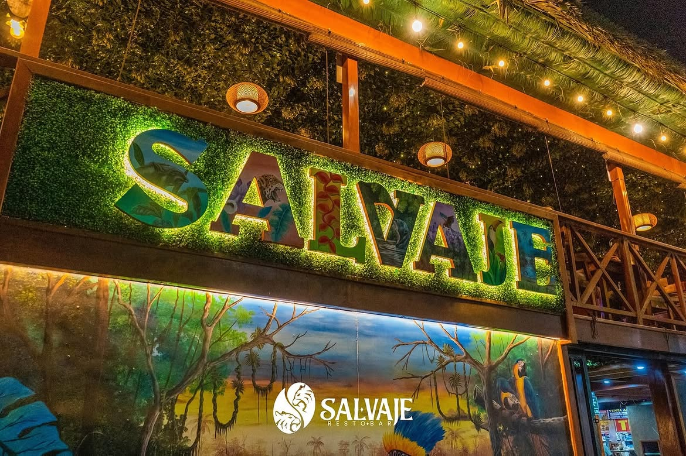

Sabor a la parrilla
Una propuesta para quienes disfrutan los sabores intensos y las buenas comidas.
Cocina · Naturaleza · Encuentros
Sabores que despiertan los sentidos y un ambiente pensado para compartir.
Bienvenidos a Salvaje
Disfruta de una propuesta gastronómica que reúne el sabor de la parrilla, la tradición peruana y una atención cercana, en un ambiente rústico inspirado en la naturaleza.
Ven con tu familia, amigos o esa persona especial. Queremos que cada visita sea una oportunidad para compartir, celebrar y volver.
Conoce nuestra esenciaNuestra esencia
Salvaje es un espacio donde la gastronomía y el ambiente se encuentran. La madera, la vegetación y la iluminación cálida crean el escenario para disfrutar una comida sin apuros.
Salvaje Restobar es un espacio pensado para disfrutar de buena comida, un ambiente acogedor y momentos para compartir.
Más que una comida
Encuentra tu motivo para venir y comparte la experiencia Salvaje.
Una propuesta para quienes disfrutan los sabores intensos y las buenas comidas.
Detalles rústicos, vegetación e iluminación cálida para cambiar de ritmo.
Un espacio para reunirse, celebrar ocasiones especiales y crear recuerdos.
Una mirada a Salvaje
La fotografía de tu establecimiento ya transmite la personalidad de la marca.

Conoce algunos de los espacios, platos y momentos que forman parte de la experiencia Salvaje.
Tu próxima salida empieza aquí
Elige una experiencia para dos o solicita una mesa para compartir con amigos y familia. La reserva quedará pendiente de confirmación por el restaurante.